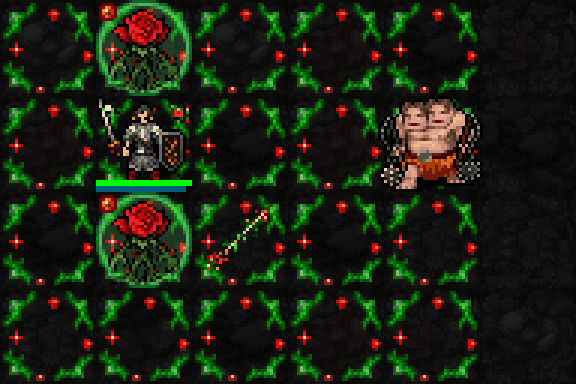
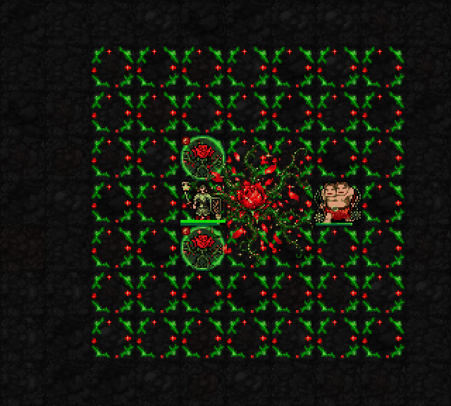

실제 SDL 테스트 전투장 캡처를 확대·느리게 반복했습니다. 효과를 덧그리지 않았습니다. 높은 자원·고정 장비의 장면이며 일반 던전 영상은 아닙니다. 1성·장미 소환 도트·전투 계수와 공격 주기는 유지했습니다.
초록 가시와 붉은 꽃잎이 실제 네이티브 투사체의 통과 칸을 따라 이동합니다. 소환할 때가 아니라 장미가 공격할 때 표시됩니다. 한 장미의 한 발을 느리게 반복합니다. 명중·빗나감은 기존 판정 그대로입니다.

가시 소모 폭발을 사용하는 행동에 맞춰, 가운데 꽃 하나가 피고 가시 덩굴이 사방으로 3×3→5×5→7×7 크기로 뻗어갑니다. 모서리 장미 네 개는 제거했습니다. 만개 꽃·덩굴은 캐릭터·적·소환 장미 아래 레이어에 표시합니다. 크기 변화는 연출이며 피해가 순차적으로 발생하거나 추가되는 것이 아닙니다. 마지막은 확장된 정원이 남은 화면입니다.
